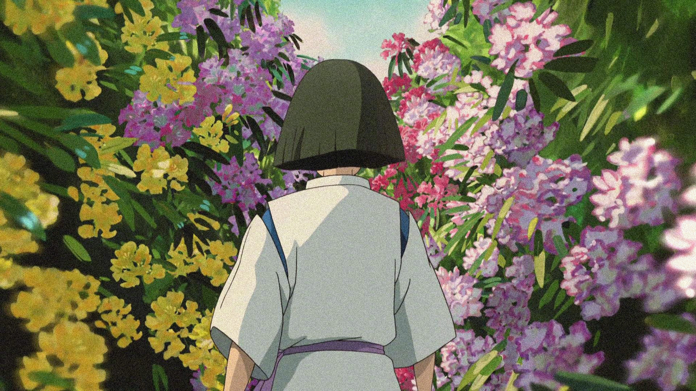
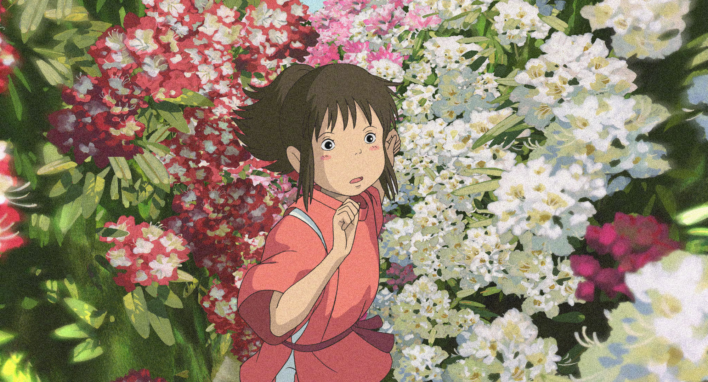
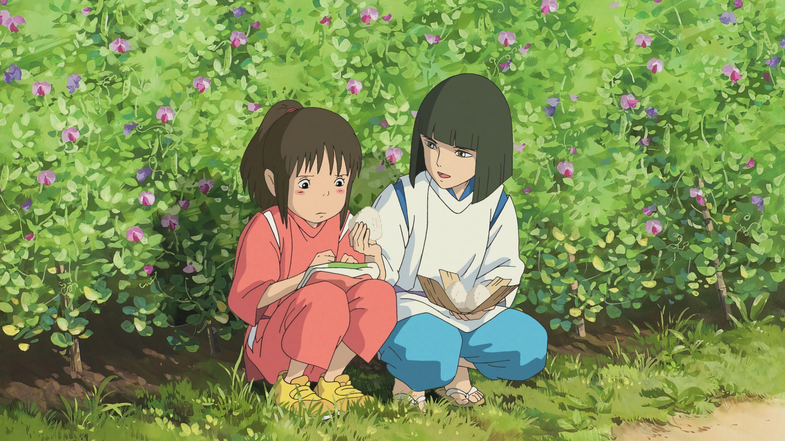

千与千寻的神隐
令人感动的故事
|  |  |
在宫崎骏的《千与千寻》中，我看到了两个截然不同的故事。第一个故事，关于如何在物欲横流的世界，保持内心的干净。它让我想起法国诗意现实主义剧作家普莱卫说过的一句话： 生活的信心只有在超越种种磨难之外，在与儿童目光的相接中获得。说得多好啊。 看到这句话，我才恍然明白了《千与千寻》。 它讲述的是一个孩子的冒险，却给了我这个成人某种生活的信心。 这种信心，就来自孩子清澈的眼光，来自一种未经世事的无畏和诚实。
于是，小镇里发生的一切，在顷刻间，变的纯粹。那是一种莫名的牵绊，是不愿长大的执念，也是终将离开的过往。还记得《少年Pi的奇幻漂流》里，那句动人的旁白： 人生就是不断地放下、前行，但遗憾的是，我们总来不及好好告别。 在经历了一场比《少年Pi》还要奇幻地冒险后，千寻终于迎来了与童年作别的时刻。 只见，在波涛散去的平原上，回家的路就在前方，白龙对千寻说：“去吧，记住，一定不要回头！” 两人就此分手。那一刻，碧空如洗，有大片的流云飘过，千寻踏过青草与沟壑，穿过隧道，在现实世界里和父母团聚。 而白龙的话，还在耳边回响：“不要回头！不要回头！”